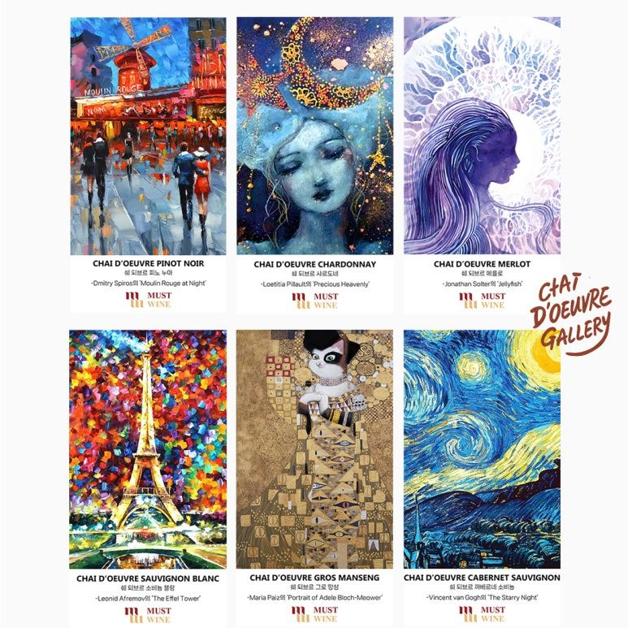
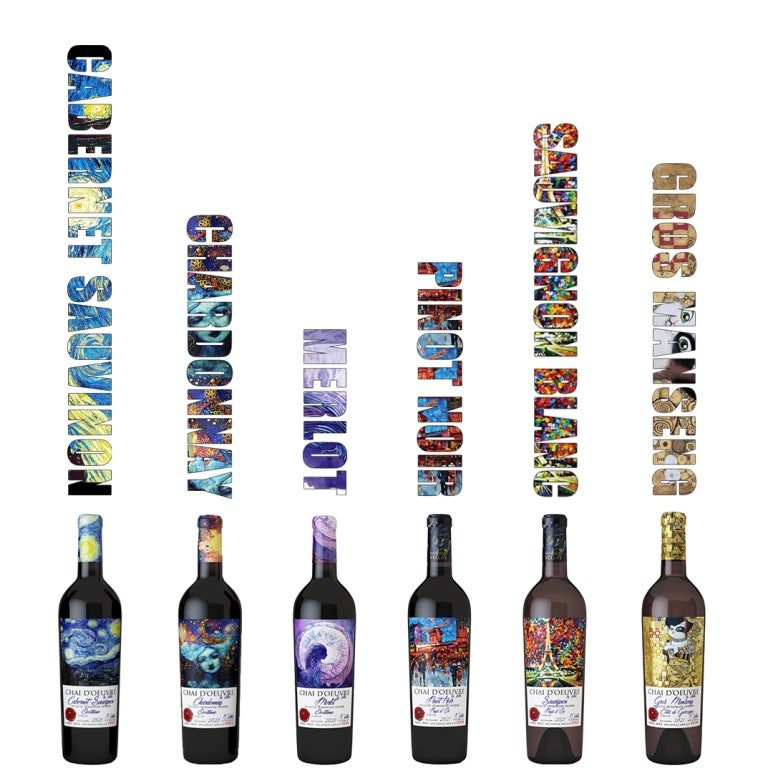

선물하기 좋은 와인 추천 쉐 되브르 마스터피스 컬렉션
와인을 즐기는 것은 단순히 맛을 음미하는 것을 넘어, 그 속에 담긴 테루아와 생산자의 철학, 그리고 예술적 영감을 공유하는 과정입니다. 오늘 소개해 드릴 쉐 되브르(Chai d'Oeuvre) 시리즈는 프랑스 남부 랑그독의 뜨거운 태양 아래 탄생한 비뇨블 벨라스(Vignobles Vellas) 와이너리의 야심작입니다.
와인 잔에 담긴 6점의 명화
쉐 되브르(Chai d'Oeuvre) 마스터피스 컬렉션
와인을 즐기는 것은 단순히 맛을 음미하는 것을 넘어, 그 속에 담긴 테루아와 생산자의 철학, 그리고 예술적 영감을 공유하는 과정입니다. 오늘 소개해 드릴 쉐 되브르(Chai d'Oeuvre) 시리즈는 프랑스 남부 랑그독의 뜨거운 태양 아래 탄생한 비뇨블 벨라스(Vignobles Vellas) 와이너리의 야심작입니다.
'쉐 되브르'는 프랑스어로 '걸작(Masterpiece)'을 의미합니다. 이름에 걸맞게 세계적인 명화들을 와인 라벨에 고스란히 옮겨 담아, 와인 병 하나하나가 마치 하나의 예술 작품처럼 느껴지도록 설계되었습니다. 선물하기 좋은 와인으로 아주 추천드립니다.

밤의 역동성과 정교함의 조화
1. 쉐 되브르 까베르네 소비뇽: 고흐의 ‘별이 빛나는 밤’
예술적 영감: 빈센트 반 고흐의 대표작 별이 빛나는 밤(The Starry Night)이 라벨을 장식하고 있습니다. 소용돌이치는 밤하늘의 역동적인 에너지는 까베르네 소비뇽이 가진 강렬한 힘과 닮아 있습니다.
품종 및 풍미: 까베르네 소비뇽 100%로 양조되었습니다. 짙고 어두운 루비 색상은 고흐의 깊은 밤하늘을 연상시킵니다. 블랙베리, 블랙커런트의 진한 향이 코끝을 자극하며, 오크 숙성에서 오는 은은한 바닐라와 토스트 뉘앙스가 층층이 쌓여 복합미를 더합니다. 탄탄한 타닌과 묵직한 바디감은 고흐의 두꺼운 붓 터치처럼 입안에서 묵직한 존재감을 드러내며 긴 여운을 남깁니다.
2. 쉐 되브르 피노 누아: 드미트리 스피로스의 ‘물랑루즈의 밤’
예술적 영감: 현대 인상주의 화가 드미트리 스피로스의 물랑루즈의 밤(Moulin Rouge at Night)을 담았습니다. 파리의 화려한 조명과 비에 젖은 거리의 낭만적인 분위기는 피노 누아의 섬세함과 절묘하게 어우러집니다.
품종 및 풍미: 피노 누아 100%로 제작되었습니다. 맑고 투명한 루비 빛깔은 파리의 밤거리를 비추는 네온사인처럼 매혹적입니다. 산딸기와 체리의 신선한 아로마에 은은한 장미 꽃잎 향이 섞여 화사하게 피어오릅니다. 가벼운 바디감과 세련된 산미는 마치 경쾌한 왈츠를 추듯 혀끝을 스쳐 지나가며 우아한 피니시를 선사합니다.

신비로운 생명력과 우아함의 조우
3. 쉐 되브르 메를로: 조나단 솔터의 ‘해파리’
예술적 영감: 조나단 솔터의 환상적인 작품 해파리(Jellyfish)가 라벨을 감싸고 있습니다. 캔버스 위를 자유롭게 유영하는 해파리의 유연한 곡선은 메를로 품종 특유의 매끄러운 질감을 시각적으로 표현합니다.
품종 및 풍미: 메를로 100%로 완성되었습니다. 부드러운 타닌이 실크처럼 입안을 감싸는 것이 특징입니다. 잘 익은 자두와 레드 체리의 붉은 과실 향이 입안 가득 퍼지며, 자극적이지 않으면서도 깊이 있는 풍미를 지니고 있습니다. 어떤 요리와도 편안하게 어울리는 포용력을 갖춘, 마치 바다의 생명력처럼 유연한 와인입니다.
4. 쉐 되브르 샤르도네: 로에티시아 필로의 ‘천상의 소중함’
예술적 영감: 로에티시아 필로의 Precious Heavenly는 신비로운 여성의 형상을 통해 천상의 아름다움을 묘사합니다. 이 고결한 이미지는 샤르도네가 가진 황금빛 우아함과 일맥상통합니다.
품종 및 풍미: 샤르도네 100%입니다. 반짝이는 연한 금빛은 작품 속 인물의 아우라를 닮았습니다. 잘 익은 열대 과일, 복숭아, 서양배의 향이 풍부하며, 입안에서는 크리미한 질감과 함께 산뜻한 산미가 조화를 이룹니다. 피니시에서 느껴지는 고소한 아몬드와 비스킷의 뉘앙스는 이 와인을 더욱 정교하게 만들어줍니다.

선명한 색채와 위트 있는 재해석
5. 쉐 되브르 소비뇽 블랑: 레오니드 아프레모프의 ‘에펠탑’
예술적 영감: 나이프 페인팅의 거장 레오니드 아프레모프의 에펠탑(The Eiffel Tower)이 담겨 있습니다. 화려하고 선명한 색채 대비는 소비뇽 블랑의 톡 쏘는 생동감을 완벽하게 대변합니다.
품종 및 풍미: 소비뇽 블랑 100%입니다. 갓 짜낸 자몽과 레몬의 시트러스 아로마, 파릇파릇한 풀 내음이 코끝을 상쾌하게 자극합니다. 입안을 정화해 주는 듯한 깔끔하고 높은 산미 덕분에 식전주로 사용하거나 신선한 해산물 샐러드와 매칭했을 때 그 진가를 발휘합니다. 에펠탑의 불빛처럼 반짝이는 청량함이 매력적입니다.
6. 쉐 되브르 그로 망상: 마리아 파이즈의 ‘아델레 블로흐-뮤어의 초상’
예술적 영감: 마리아 파이즈는 클림트의 명화를 고양이 형상으로 위트 있게 재해석한 Portrait of Adele Bloch-Meower를 선보였습니다. 이 독창적인 예술성은 그로 망상이라는 다소 이색적인 품종의 매력과 닮아 있습니다.
품종 및 풍미: 그로 망상 100%로 양조되었습니다. 황금빛 라벨처럼 잘 익은 살구, 꿀, 그리고 농축된 열대 과일의 달콤한 향이 풍성합니다. 풍부한 당미를 가지고 있지만, 그에 못지않은 선명한 산도가 뒷받침되어 훌륭한 밸런스를 보여줍니다. 위트 있는 라벨만큼이나 반전 매력이 넘치는 화이트 와인입니다.
한 줄 평과 페어링 제안
까베르네 소비뇽: "스테이크와 함께 즐기는 강렬한 명화 한 잔"
피노 누아: "파리의 낭만을 담은 섬세한 로맨스"
메를로: "실크처럼 부드럽게 흐르는 바다의 선율"
샤르도네: "천상의 우아함을 담은 골든 아로마"
소비뇽 블랑: "입안에서 터지는 시트러스의 화려한 불꽃놀이"
그로 망상: "달콤한 황금빛 위트가 선사하는 반전 매력"
비뇨블 벨라스의 쉐 되브르 시리즈는 단순히 와인을 마시는 행위를 넘어, 시각과 후각, 미각이 동시에 깨어나는 예술적인 경험을 선사합니다. 6종의 컬렉션을 모두 모아 거실 한편에 장식하면 나만의 작은 프라이빗 갤러리가 완성됩니다. 데일리 와인부터 특별한 기념일이나 예술을 사랑하는 지인에게 전하는 선물까지 이보다 더 완벽한 선택은 없을 것입니다.
010-8078-7493 문자 주시면 가장 빠르게 안내해 드립니다.
이 글은 땡큐와인 네이버 블로그에 먼저 올린 글이에요.